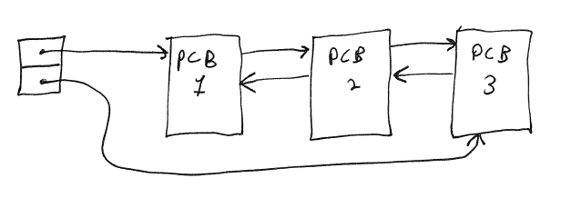
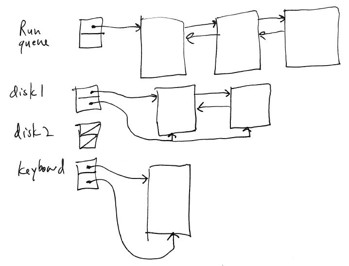
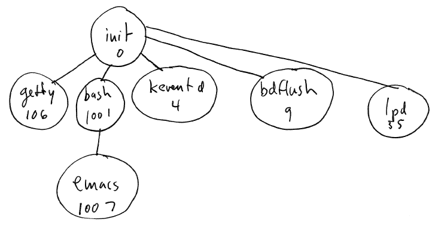
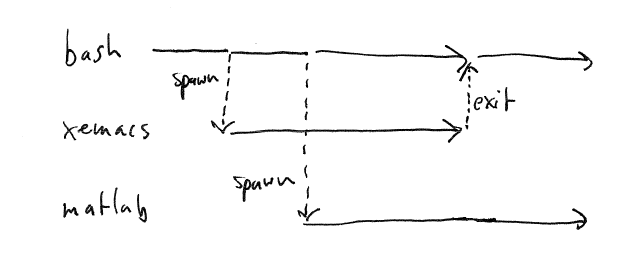
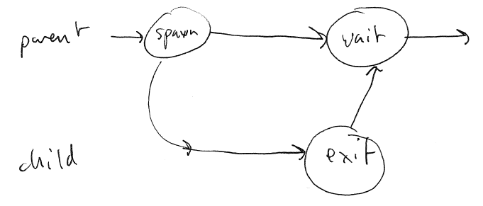
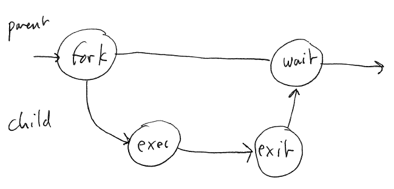
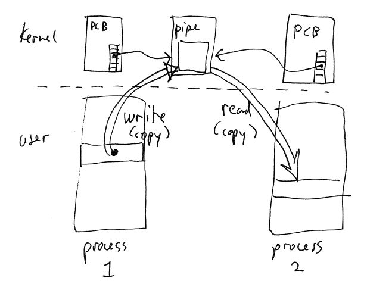
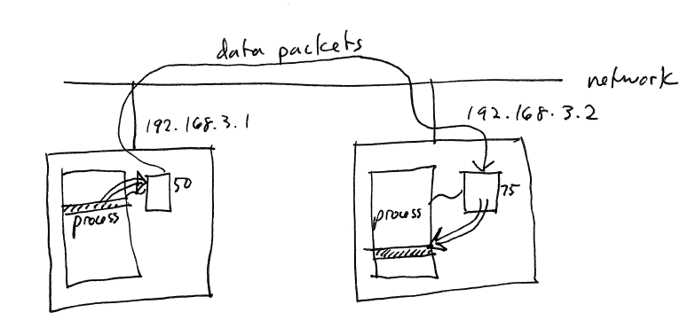
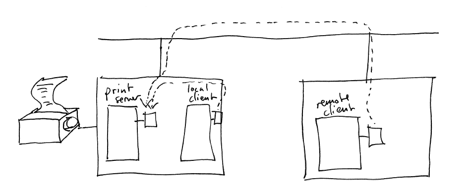

The main data structure used in process scheduling is the process
queue: this is simply a queue of PCBs:

The run queue is a queue
of processes that are in the ready state, meaning that they are ready
to run on the CPU. When a fresh time slice is available, the
kernel removes one of the processes from the run queue and schedules it. The algorithm
the kernel uses to pick the process to schedule is the scheduling
algorithm.l
When a process is suspended the kernel puts it in a wait
queue. A common strategy is to associate one wait queue with each
I/O resource:

When the event associated with the wait queue takes place---e.g.,
input is available---the kernel wakes up (one or more) processes in the
wait queue and moves them to the run queue.
Process operations
Each process (except for the first process in the system) has a
parent: the process that created it.
This means that there is a tree of processes:

Each process is assigned a unique identifier (generally an integer):
this is the process identifier
or pid.
The parent/child relationship can be important. For example,
consider a shell (command interpreter) process. Each program you
run from the shell is a child process of the shell. Typically,
the shell will wait for the current child to exit before reading
another command (and starting another process). However, if you
run a process in the background, then the shell may have several
children running simultaneously.

Generally, only a parent process is allowed to wait for a child
process to exit.
Waiting for a child to exit allows the
parent to receive the child's exit
status, which records the child's exit code, and other
information, such as whether the child terminated normally or
abnormally. (E.g., if the process died because of a memory error,
that is generally recorded as an abnormal termination.)
Inheritance of resources: a child will generally inherit some of the
resources that the parent is using. For example, some of the file
handles that the parent has open may be inherited by the child.
The parent can control which resources it wants the child to inherit.
Example of inheritance: every process (in Unix and also in Windows)
has three standard file handles: standard output, error output, and
standard input. You have seen these as stdout/stderr/stdin in C
and cout/cerr/cin in C++. By default, child processes inherit
each of these file handles. Let's say you have a shell running in
a terminal window. The shell's standard file handles are
connected to the terminal window. When you run a program within
the shell---a child process----it inherits the same standard file
handles as its parent, meaning that its input and output are connected
to the same terminal window.
There are two common models for system-level process creation APIs.
The simplest is to support a spawn operation. The spawn system
takes the name of an executable file containing the program to run, and
any additional information (such as command-line arguments) to be
passed to the new process. The Win32 CreateProcess API function
is an example of the spawn model.

Unix (and Linux, etc.) uses a different model for process creation:
fork/exec. Basically, fork and exec split the overall spawn into
two separate operations.
fork creates a new child process that runs within the same memory
space as the parent. Essentially, after the fork operation, there
are now two processes whose program counters are positioned at the same
instruction. The only difference is that the return value from
the call to fork returns 0 in the child process and the process
identifier (pid) in the parent's address space.

exec replaces the currently program with a new program within the
context (address space) of a running process.
Process can exit voluntarily: e.g., on Unix the exit API function,
on Win32 the ExitProcess API function. (Both functions correspond
directly to a system call.) The exit
code that the process passes to the function as an argument is
communicated to the parent. A voluntary exit is normal process termination.
A process can be killed by the OS kernel if it violates a resource
allocation limit (e.g., it used too much CPU time), or if it does
something illegal (such as trying to execute an illegal instruction,
dereferencing a null pointer, etc.) This is abnormal termination.
A process can be killed by another process. For example, the
parent can kill a child. An unrelated process on the system can
kill an arbitrary process if it has sufficient privilege. This is
also abnormal termination.
There are many reasons why processes may need to communicate with
each other:
There are lots of mechanisms for IPC. Three broad categories:
An I/O-based IPC mechanism.
A pipe is a one-way channel between processes. One process
writes to the pipe, one process reads from the pipe. You will
sometimes see pipes described as a FIFO because of the first-in,
first-out nature of sending information. (The order in which
bytes are written is the same as the order in which they are removed.)
Will talk more about pipes and their implementation later in the
semester.
Example of pipes: Unix processes
Count all of the lines of "Pride and Prejudice" containing the word
"marriage" (ignoring capitalization).
cat pandp.txt | tr 'A-Z' 'a-z' | grep
marriage | wc -l
The overall comand is constructed out of a collection of processes
in a pipeline. The
first process sends data to the second process, the second reads from
the first and sends to the third, etc. Pipes are used to connect
the processes.
Pipes are implemented using a data structure in the kernel.
The data structure contains a pipe buffer: a fixed size chunk of
memory. The writing process copies data into the data buffer
(copyin), the reading process copies data out of the pipe buffer:

Because the pipe buffer is limited size, the writing process may be
blocked (suspended) if the pipe buffer is full.
Processes can request that a region of shared memory be mapped into their
address space. It's just what it sounds like: a chunk of memory
that two or more processes share.
The processes communicate using a shared data structure residing in
shared memory.
The processes must agree to use a synchronization mechanism to
ensure that two processes are not trying to access and/or modify the
data structure at the same time. The synchronization mechanism
may be provided by the OS, or it can be implemented entirely by the
cooperating processes without help from the OS.
Example synchronization mechanisms:
semaphores
mutex locks
IPC using fixed-size messages. A process can create a mailbox
if it wishes to receive messages from other processes. It can
send a message to a mailbox . Thus, two processes involved: the
sender and the receiver.
The mailbox is (generally) a kernel data structure.
An obvious feature of message-passing IPC mechanisms is that the
receiver will be blocked (suspended) until a message is available.
Messages may be queued in a mailbox, or the mailbox might only be
capable of storing one message at a time. If the mailbox is too
full to store a message at a particular moment, the process trying to
send the message may be blocked (same as a writer to a pipe when the
pipe buffer is full).
It is even possible to design a message-passing system where the
mailbox does not buffer messages in any way. In this case, a
sender cannot proceed until the receiver explicitly tries to receive a
message.
One of the nice properties of message-passing is that they do not
require any explicit synchronization by the sending and receiving
processes: the act of sending or receiving a message is itself a form
of synchronization.
IPC is possible between processes on different computers attached to
a network.
E.g., TCP/IP networks (the internet)
The operating system allows processes to create sockets. A socket is a kernel
data structure much like a pipe or mailbox, but it is associated with
local and (possibly) remote addresses and ports. An address is a
unique identifier of a computer on the network. A port identifies
a particular socket on the computer.

There are two main kinds of sockets.
Stream sockets: these are like two-way pipes (or a pair of
pipes). Send and receive arbitrary sequences of bytes.
Datagram sockets: these are mailboxes for message passing.
Network sockets can be used for inter-process communication between
processes on the same machine. Example: a print server:
